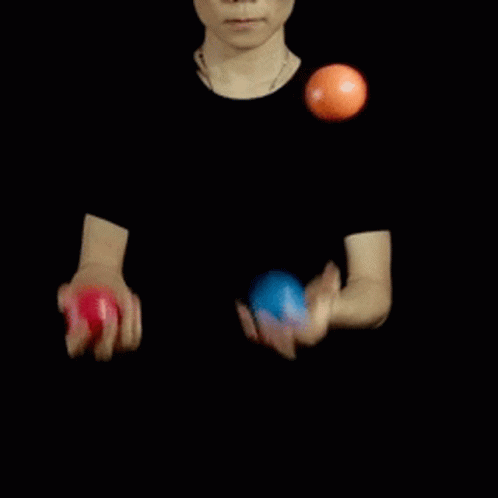

Performance Curves
Plotting performance against practice — what the shapes tell you, and the one thing they can’t.
By the end of this lesson you will be able to…
- 1Explain what a performance curve plots, and why it can rise or fall.
- 2Recognize the four general curve shapes and what each says about practice.
- 3Explain why a performance curve is not a learning curve.
- 4Describe the ways curves can mislead — masking differences and hiding ongoing learning.
What a performance curve is
A performance curve plots performance (for one person or a group average) against practice trials. It’s the most common way to picture how a skill changes with practice.
A curve can rise or fall depending on how the task is scored — and both can mean improvement:
Scoring successes (catches, targets hit) → the curve rises as skill grows. Scoring time or errors (seconds to set up an IV line, sway during dual-task walking) → the curve falls as skill grows. Always check what’s on the y-axis before reading a curve.
Four general types of performance curve
Most curves fall into one of four shapes. Each tells a different story about when the gains happen.
Linear
Performance improves in proportion to practice — a steady, straight climb.
Negatively accelerated
Large gains early, then improvement slows. Probably the most common shape.
Positively accelerated
Little early progress, then substantial improvement later.
S-shaped
Slow at first, then rapid improvement (often an “aha” moment), then a levelling off.
Name that curve
Match each description to its shape. Answer all three to continue.
1. A learner makes huge progress in the first few sessions, then improvement crawls for weeks.
2. A learner struggles at first, then has an “aha” moment and improves fast, then plateaus.
3. A learner gains the same small amount with each practice trial, session after session.
The shape tells you when gains happen, which is genuinely useful for spotting a struggling learner or a coming breakthrough. But hold onto one thing for the next screen: none of these shapes tells you how much was actually learned.
Answer all three to continue.
Learning to juggle
Everything so far has been about curve shapes in the abstract. Here’s a real study that put those shapes to the test — a good illustration of how performance curves show up in actual motor-learning research.

Qiao (2021) had 112 undergraduates practice the three-ball cascade over roughly 8 weeks — about 17 minutes, twice a week. Performance was scored as the number of successful catches in the last three minutes of each session, and each learner’s scores were plotted as an individual performance curve.
Qiao, M. (2021). The S-shaped performance curve prevails in practicing juggling. Journal of Motor Learning and Development, 9(2), 230–246.
Before you see what they found — which curve shape do you think was most common across all those learners?
Make a prediction to continue.
S-shaped won — by a lot
Most learners showed an S-shaped curve: a slow start, a rapid middle, and a levelling off. That’s a surprise, since the negatively accelerated curve is usually called the “typical” one.
Percentages are approximate, from Qiao (2021). Most learners’ individual curves were best fit by an S-shape.
A performance curve is not a learning curve. It shows what performance did during practice — not what was permanently learned.
What performance curves hide
Curves are useful, but they mislead in specific ways — each one a reason we can’t read learning straight off the plot. Select each card to reveal the limitation.
A patient’s performance curve flattens for two weeks — no visible improvement. What’s the safest interpretation?
Answer to continue.
So how do we measure learning?
Here’s the bind. Learning can only be inferred (Lesson 1), and the obvious tool for the inference — the performance curve — can’t separate lasting learning from temporary performance (this lesson).
The answer is a study design, not a better graph. If you let temporary effects fade and then test again under common conditions, the differences that remain must be learning. That design is the whole of Lesson 3.
What you can now do
- 1Explain what a performance curve plots and why it can rise or fall.
- 2Recognize the four shapes — linear, negatively accelerated, positively accelerated, S-shaped.
- 3Say clearly why a performance curve is not a learning curve.
- 4Name the ways curves mislead: masking differences, hiding ongoing learning behind a plateau, and failing to compare interventions.
We solve the problem this lesson raised — the transfer/retention design that finally lets you separate learning from performance.
When you’re done, continue to Lesson 3: Motor Learning Study Design.